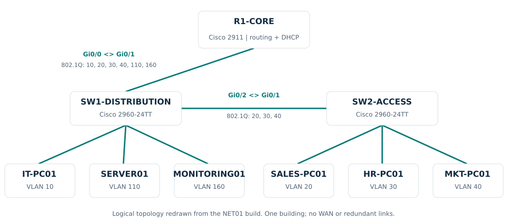
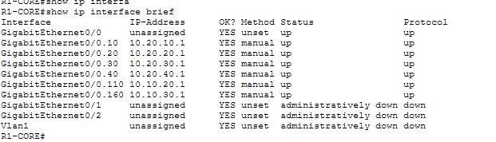
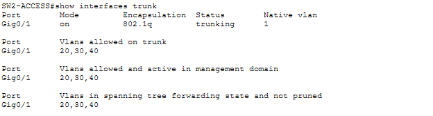
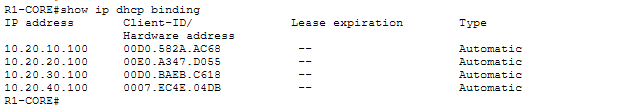
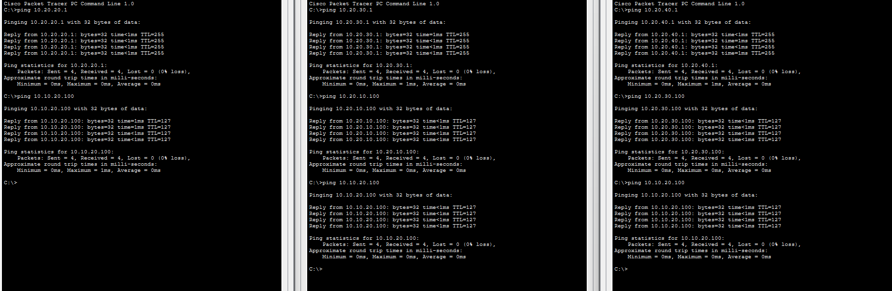

05 / NET01 / CISCO PACKET TRACER
Segmented Office Network with Cisco Switching & Routing
I adapted the network architecture from INFRA-BASE-v1 into a Cisco Packet Tracer lab to practice access-port configuration, VLAN trunking, inter-VLAN routing, DHCP, and methodical connectivity checks.
Balcom Insurance is the fictional company behind my homelab. NET01 is an independent simulation of its office network, with Cisco switches and a router taking the place of the virtual switching and OPNsense routing used in the original build.
THE OBJECTIVE
Build the network behind the lab
My infrastructure and security projects depend on working network paths. For NET01, I focused on the configuration behind those paths: which VLAN an endpoint belongs to, which links carry that VLAN, where its gateway lives, and how it receives an address.
I built one office with IT, Sales, HR, Marketing, Servers, and Monitoring networks. The aim was a working baseline I could explain and troubleshoot, then extend with controlled faults, replacement hardware, and another building.
ARCHITECTURE
Familiar subnets, explicit switch and router roles

A Cisco 2911 provides the six gateways through subinterfaces on Gi0/0. Two Cisco 2960-24TT switches carry the VLANs. SW1 hosts IT and the infrastructure endpoints; SW2 hosts Sales, HR, and Marketing.
| VLAN | Purpose | Subnet | Gateway | Addressing |
|---|---|---|---|---|
| 10 | IT | 10.20.10.0/24 | 10.20.10.1 | DHCP |
| 20 | Sales | 10.20.20.0/24 | 10.20.20.1 | DHCP |
| 30 | HR | 10.20.30.0/24 | 10.20.30.1 | DHCP |
| 40 | Marketing | 10.20.40.0/24 | 10.20.40.1 | DHCP |
| 110 | Servers | 10.10.20.0/24 | 10.10.20.1 | SERVER01: .100 static |
| 160 | Monitoring | 10.10.30.0/24 | 10.10.30.1 | MONITORING01: .100 static |
The source architecture used separate interfaces for Servers and Monitoring. VLANs 110 and 160 are deliberate mappings for this simulation. The unused Clients network, malware lab, and home/WAN connection are outside NET01.
IMPLEMENTATION
Configure each layer, then check the result
- Access ports: I created all six VLANs on both switches and assigned each endpoint port to its intended VLAN.
- Trunks: SW1 Gi0/2 to SW2 Gi0/1 carries VLANs 20, 30, and 40. SW1 Gi0/1 to R1 Gi0/0 carries all six. Both ends retain native VLAN 1.
- Routing: I configured one tagged subinterface and .1 gateway per subnet, then verified that all six were up/up.
- DHCP: I created a pool per department and excluded .1 through .99. All four workstations received .100 in their respective subnets. The two servers stayed static.
- Validation: I checked gateway reachability, DHCP bindings, selected department-to-department paths, and client/server connectivity.
SELECTED EVIDENCE
From interface state to endpoint reachability
These four views show the main result. Images open at full size. The PDF also includes access-port membership, IT's DHCP settings, and server-to-monitoring tests in both directions.








TROUBLESHOOTING & LESSONS
Check the current state before assuming a fault
One side of the switch link was a trunk before the other
The other switch reported an 802.1Q BPDU on a non-trunk port. I completed the matching trunk configuration and let spanning tree converge. A later check showed all three required VLANs forwarding. I used the settled state to judge the result.
The router-facing trunk was configured but down
SW1's trunk configuration was present, but R1's physical interface still needed to be enabled. After no shutdown on Gi0/0, the link came up and the configured subinterfaces reached up/up.
Only IT appeared in the DHCP binding table
The other PCs still needed to request leases. Once I selected DHCP on Sales, HR, and Marketing, R1 listed four bindings. This separated server-side pool configuration from client-side address acquisition.
A failed ping used the wrong destination
The failed attempt targeted 10.10.20.11. The intended server was 10.10.20.100, and the corrected test succeeded. Checking the destination avoided an unnecessary configuration change.
My diagnostic order: endpoint settings, gateway reachability, access VLAN, trunk forwarding, then the router interface. Compare with a working department to narrow the scope.
OUTCOME & NEXT STEPS
A documented baseline for practical network support
NET01 gave me a working six-subnet office network and evidence for each major part of the build. It develops the port mapping, VLAN configuration, IP inventory, and troubleshooting skills used in network support, while making the traffic paths behind my security lab easier to explain.
The configuration reference reconstructs the documented commands and verification steps; it is not an exported running configuration. The Packet Tracer file was not supplied for publication. Planned follow-up labs cover deliberate faults, switch replacement, a second building, routing between sites, redundancy, and access controls.
CONTINUE EXPLORING
Networking is now its own project track.
NET01 connects the infrastructure work to focused switching and routing practice. Future NET projects will appear in the same Networking section as they are completed.